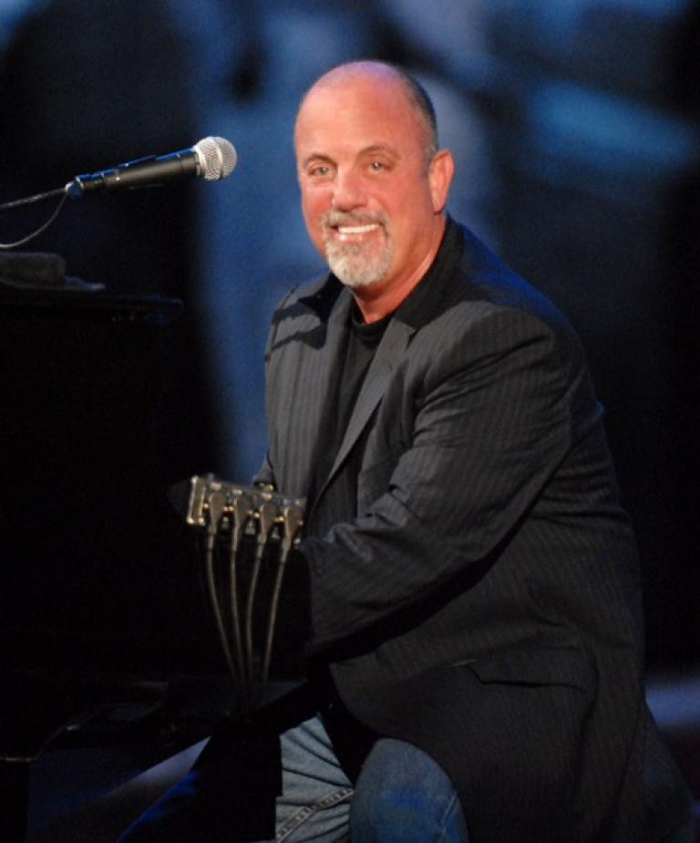

Billy Joel gives irrefutable proof that piano is a rock and roll instrument. After a stint as a lounge pianist, Billy Joel broke into the mainstream with his signature ballads followed up by anthems about everything from a disenchanting music industry to the contentious political climate.
Billy Joel ranks among rock and roll’s most talented musicians and accomplished songwriters.
His classical training and reverence for Broadway musicals have been counterpointed by his early grounding in the Long Island bar-band scene and his love of rhythm & blues, resulting in an enthusiastic yet musically sophisticated approach to rock and roll. His diverse influences include Beethoven, the Beatles, Dave Brubeck, George Gershwin, Phil Spector, Ray Charles and Fats Domino, whom Joel inducted into the Hall of Fame in 1986.
From romantic balladry to hard-rocking material, with elements of jazz, pop and soul thrown into the mix, Joel has applied his skills in a diversity of settings. He is the pop crooner of “Piano Man” and the jazz-tinged romantic of “Just the Way You Are.” Yet he’s also capable of harder-rocking fare (1980's Glass Houses), production-heavy pop with a Sixties influence (1982's The Nylon Curtain) and vocal-group soul and doo-wop (1983's An Innocent Man).
As an artist, Joel has stated that his goal is to make music that “meant something during the time in which I lived...and transcended that time.” Joel’s popularity is such that he tied the Beatles for the most multi-platinum albums in the U.S. With the success of “Piano Man"—a slice-of-life autobiography, written about Joel’s extended gig as a lounge pianist—Joel inaugurated a staggering run of hit singles. Between 1974 and1993, Joel placed at least one single in the Top Forty in every year but three. To date, thirteen of Joel’s forty-two hits have made the Top Ten, and three of them—"It’s Still Rock and Roll to Me” (1980), “Tell Her About It” (1983) and “We Didn’t Start the Fire” (1989)—reached Number One.
Billy Joel was born on May 9, 1949, in the Bronx. He displayed an early aptitude on the piano and began taking lessons at four. The training continued till he was sixteen, by which time Joel was already a veteran of three bands. In 1967, Joel joined the Hassles, a popular Long Island group that played blue-eyed soul with a twist of psychedelia. Gravitating back to the acoustic piano during the early stirrings of the Seventies singer-songwriter movement, Joel recorded Cold Spring Harbor (1971), his debut as a solo artist. In a self-penned bio included with review copies, Joel wrote, “After seven years of trying to make it as a rock star, I decided to do what I always wanted to do—write about my own experiences.”
After the album flopped, Joel dropped out of sight, working as a lounge pianist in Los Angeles. He immortalized that experience in “Piano Man,” which served as the title track from his first album for Columbia Records. (He remains with the label to this day). His next album, Streetlife Serenade (1974), included “The Entertainer,” a withering portrait of the music industry. On Joel’s fourth album, the self-produced Turnstiles (1976), the singer/pianist stretched himself as a songwriter and stylist on a varied set that ranged from the Brill Building pop of “Say Goodbye to Hollywood” to the cabaret-styled tribute to his home turf, “New York State of Mind.” Joel made his commercial breakthrough with The Stranger (1977), a hit-studded album that surpassed Simon and Garfunkel’s Bridge Over Troubled Water (1970) as the top-selling album in Columbia’s history (until Bruce Springsteen’s Born in the U.S.A. displaced it in 1984). With its jazzy sheen and compositional cunning, Joel hit his stride on The Stranger, which yielded “Just the Way You Are,” “Movin’ Out (Anthony’s Song)” and the suite-like “Scenes from an Italian Restaurant.” Its followup, 52nd Street (1978), produced another round of hits, including the hard-rocking “Big Shot.”
Beneath their fluid, polished surface, Joel’s songs teem with a New Yorker’s brashness. Joel had boxed with his fists as a teenager and, on occasion, with his songs as an adult—no more so than on 1980’s Glass Houses. Its chart-topping first single, “It’s Still Rock and Roll to Me,” rebutted punk and New Wave acts who’d taken potshots at perceived old-wavers like Joel. This further inflamed a war of words with his detractors in the rock press. However, the critics came around to Joel’s corner on the strength of such albums as The Nylon Curtain, which couched social themes in ornate pop productions inspired by the late-period Beatles, and An Innocent Man, his fond tribute to the doo-wop era. Greatest Hits Volume 1 & Volume 2, a double album that collected his singles, became Joel’s seventh consecutive Top Ten album.
Joel further refined his craft on The Bridge (1986) and Storm Front (1989)—mature later works on which he assimilated various genres into a cohesive personal style. Joel’s historic tour of the Soviet Union in 1987 resulted in a live album and video. Joel also turned a history lesson into a hit single with his rapid-fire recitation of 20th-century names and places in “We Didn’t Start the Fire,” from Storm Front. Both single and album reached Number One, as Joel’s superstar status remained unabated despite ongoing shifts in musical trends. His marriage to and divorce from model Christie Brinkley, along with various business-related lawsuits, raised his profile as a celebrity and newsmaker. In 1993, Joel released River of Dreams, his first album of new material in four years, which entered Billboard‘s album chart at Number One.
Subsequently, Joel has toured with Elton John and on his own. He also has lectured on college campuses, released Greatest Hits Volume III and composed instrumental pieces in a classical vein. Joel has remained in a state of semi-retirement as a pop songwriter and recording artist since River of Dreams. Meanwhile, worldwide sales of his back catalog topped the 100 million mark in 1999. Joel closed out the century with a gala Millennium Eve concert at New York’s Madison Square Garden.
Inductee: Billy Joel (piano, vocals; born May 9, 1949)